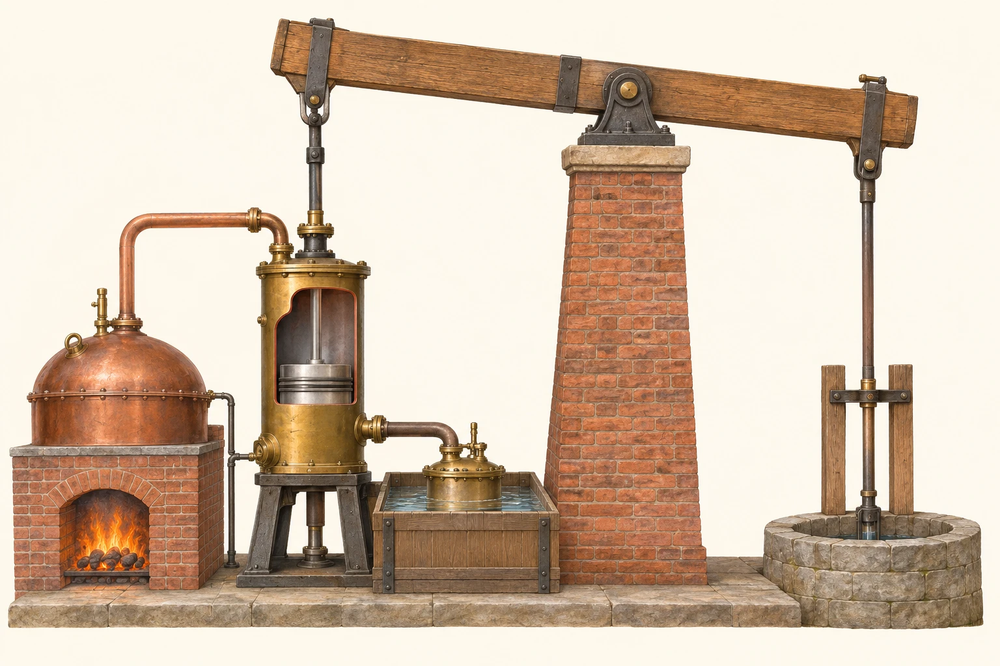
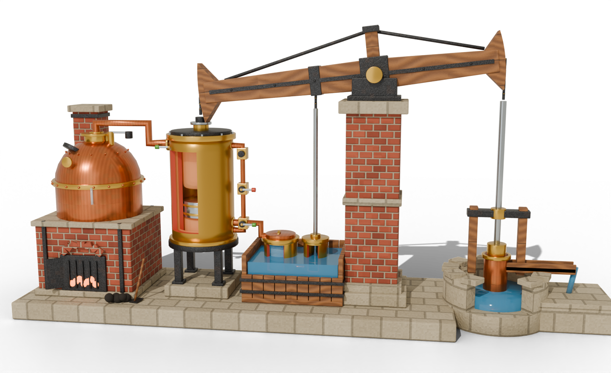

Actual al web illustration-watt.webp

Versió v5 fusionada: model 3D navegable i animat, flux tèrmic en directe, quatre fases del cicle, zoom de condensació i focus visual per peça amb bafarada emergent sobre el mateix número.
Esquerra: gira 360° · Roda: amplia · Botó dret / Maj+arrossegar / fletxes: desplaça · Número (1–9): obre la descripció allà mateix.
.glb interactiu cal obrir aquesta pàgina amb un servidor web local (p. ex. python -m http.server 8015), perquè els navegadors bloquegen la càrrega de fitxers 3D des de file://.
Alterna entre la vista muntada i l’explosionada; en clicar qualsevol número vermell s’atenua la resta de la màquina, destaca la peça i s’obre l’explicació al costat mateix.

